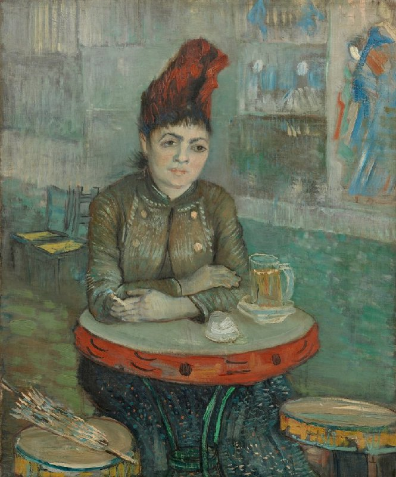
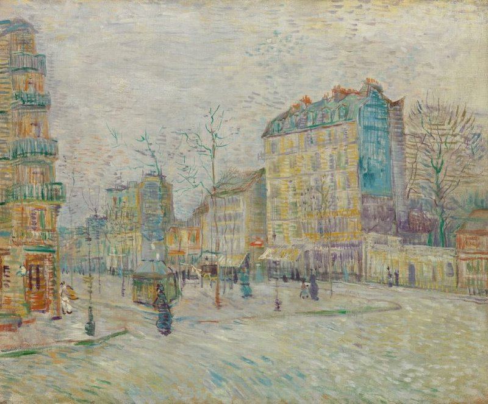

Vincent van Gogh's artistic journey
Main page
Early years
Paris
Arles
Saint-Rémy-de-Provence
Auvers-sur-Ois

In the Café: Agostina Segatori in Le Tambourin
, Paris, May-July 1887
By the Seine
, Paris, May-July 1887

Boulevard de Clichy
, Paris, May-July 1887
Self-Portrait as a Painter
, Paris, December 1887-February 1888